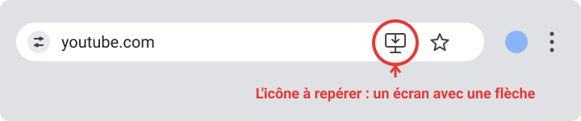
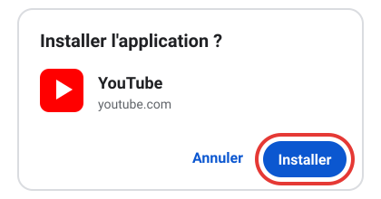
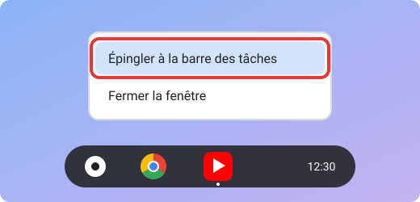

Réinitialiser les cookies YouTube
Suis ces 4 étapes dans l'ordre. Ça prend une minute, et ça ne touche que les données de YouTube.
-
Ouvre YouTube
Clique sur le bouton ci-dessous : YouTube s'ouvre dans un nouvel onglet.
Ouvrir YouTube -
Supprime les cookies de la page
Reste sur l'onglet YouTube, puis choisis ton navigateur ci-dessous et suis les étapes. La barre d'adresse est la longue barre tout en haut de la fenêtre, où est écrit youtube.com.
Chrome
- En haut, à gauche de l'adresse « youtube.com », clique sur la petite icône (un cadenas ou deux curseurs).
- Clique sur « Cookies et données de site ».
- Clique sur « Gérer les données de site sur l'appareil ».
- Clique sur l'icône de corbeille à côté de « youtube.com », puis sur « Terminé ».
Edge
- En haut, à gauche de l'adresse « youtube.com », clique sur le cadenas.
- Clique sur « Cookies » (ou « Cookies et données de site »).
- Dans la fenêtre qui s'ouvre, clique sur « youtube.com », puis sur « Supprimer ».
- Clique sur « Terminé ».
Firefox
- En haut, à gauche de l'adresse « youtube.com », clique sur le cadenas.
- Clique sur « Effacer les cookies et les données de site… ».
- Confirme en cliquant sur « Supprimer ».
Safari (Mac)
- Tout en haut de l'écran, clique sur le menu « Safari », puis sur « Réglages… ».
- Ouvre l'onglet « Confidentialité », puis clique sur « Gérer les données de sites web… ».
- Tape youtube dans la barre de recherche et clique sur « youtube.com » dans la liste.
- Clique sur « Supprimer », puis sur « Terminé ».
-
Ferme la page YouTube
Clique sur la petite croix de l'onglet YouTube, ou appuie sur Ctrl + W (Windows) / Cmd + W (Mac).
-
Ouvre une nouvelle page
Ouvre un nouvel onglet avec Ctrl + T (Windows) / Cmd + T (Mac). C'est terminé : les cookies de YouTube ont été réinitialisés.
Après cette manipulation, tu peux être déconnecté de YouTube sur ce navigateur : c'est normal.
Bonus : installer YouTube comme une vraie application Chrome et Chrome OS
Sur Chrome (ordinateur ou Chromebook), tu peux transformer YouTube en application : elle s'ouvre dans sa propre fenêtre, avec son icône. À faire seulement sur ton propre appareil.
-
Ouvre YouTube dans Chrome
Sur ton Chromebook ou ton ordinateur, ouvre le navigateur Google Chrome et va sur youtube.com.
-
Repère l'icône d'installation
Tout à droite de la barre d'adresse (là où il y a « youtube.com »), cherche cette icône : un petit écran d'ordinateur avec une flèche vers le bas.

Tu ne la vois pas ? Attends quelques secondes, ou ouvre le menu (les trois points en haut à droite de Chrome, cadre n°1), puis « Diffuser, enregistrer et partager », puis « Installer la page en tant qu'application… » (le nom peut varier selon ta version).

-
Clique sur l'icône, puis sur « Installer »
Une petite fenêtre s'ouvre : clique sur le bouton bleu « Installer ».

Si YouTube est déjà installé, l'icône affiche « Ouvrir dans l'application » : clique dessus pour l'ouvrir.
-
YouTube s'ouvre dans sa propre fenêtre
Sa petite icône rouge apparaît dans la barre des tâches, la barre qui se trouve en bas de l'écran.
-
Épingle l'application à la barre des tâches
Fais un clic droit (ou touche le pavé tactile avec deux doigts) sur l'icône YouTube dans la barre des tâches, puis clique sur « Épingler à la barre des tâches ».

Tu pourras ouvrir YouTube en un clic, sans passer par Chrome.